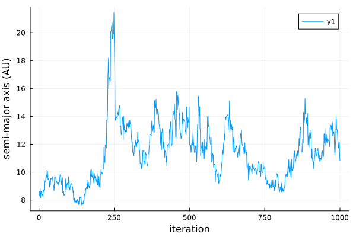
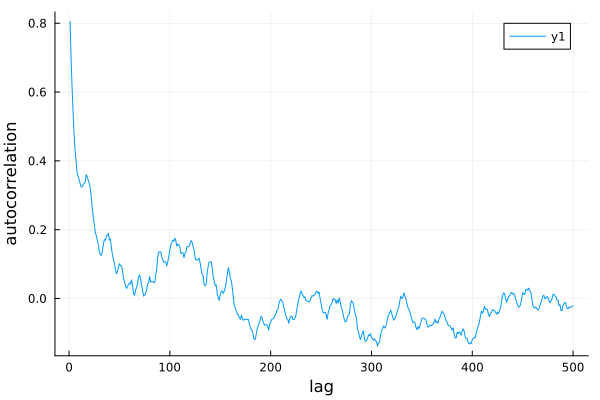
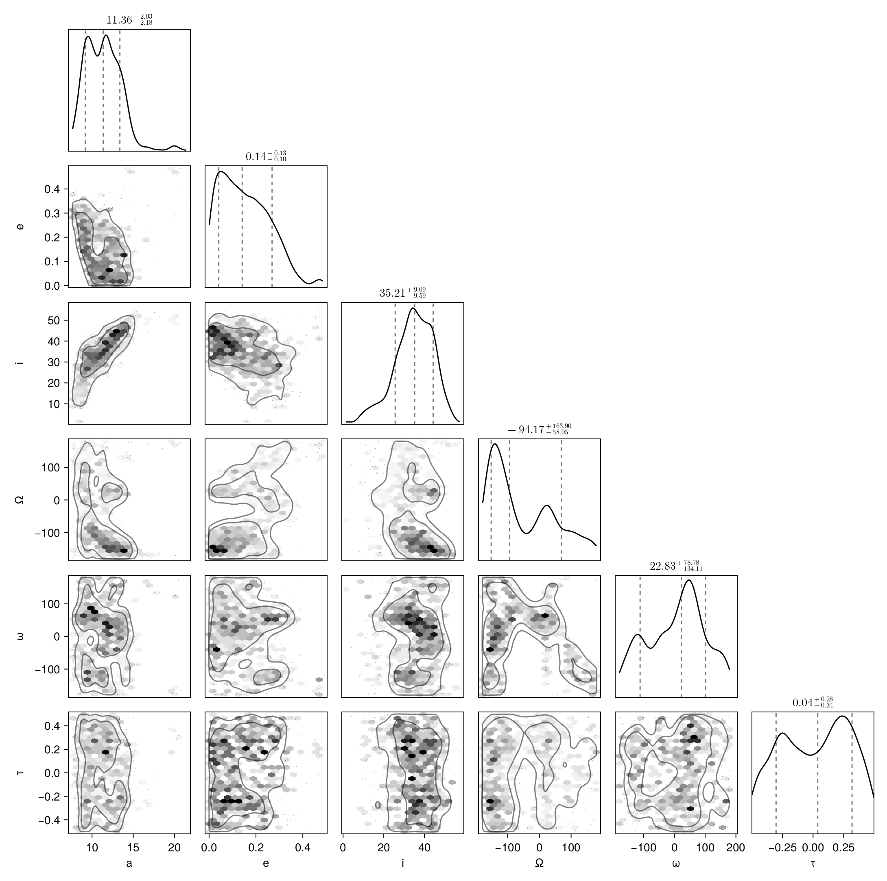

Fit Relative Astrometry
Here is a worked example of a basic model. It contains a star with a single planet, and several astrometry points.
The full code is available on GitHub
Start by loading the Octofitter and Distributions packages:
using Octofitter, DistributionsCreating a planet
Create our first planet. Let's name it planet B.
astrom = AstrometryLikelihood(
(epoch = 5000, ra = -505.7637580573554, dec = -66.92982418533026, σ_ra = 10, σ_dec = 10, cor=0),
(epoch = 5120, ra = -502.570356287689, dec = -37.47217527025044, σ_ra = 10, σ_dec = 10, cor=0),
(epoch = 5240, ra = -498.2089148883798, dec = -7.927548139010479, σ_ra = 10, σ_dec = 10, cor=0),
(epoch = 5360, ra = -492.67768482682357, dec = 21.63557115669823, σ_ra = 10, σ_dec = 10, cor=0),
(epoch = 5480, ra = -485.9770335870402, dec = 51.147204404903704, σ_ra = 10, σ_dec = 10, cor=0),
(epoch = 5600, ra = -478.1095526888573, dec = 80.53589069730698, σ_ra = 10, σ_dec = 10, cor=0),
(epoch = 5720, ra = -469.0801731788123, dec = 109.72870493064629, σ_ra = 10, σ_dec = 10, cor=0),
(epoch = 5840, ra = -458.89628893460525, dec = 138.65128697876773, σ_ra = 10, σ_dec = 10, cor=0),
)
# Or from a file (must install CSV.jl first):
# using CSV
# astrom = CSV.read("mydata.csv", AstrometryLikelihood)
@planet B Visual{KepOrbit} begin
a ~ truncated(Normal(10, 4), lower=0, upper=100)
e ~ Uniform(0.0, 0.5)
i ~ Sine()
ω ~ UniformCircular()
Ω ~ UniformCircular()
τ ~ UniformCircular(1.0)
end astromPlanet B
Derived:
ω, Ω, τ,
Priors:
a Truncated(Distributions.Normal{Float64}(μ=10.0, σ=4.0); lower=0.0, upper=100.0)
e Distributions.Uniform{Float64}(a=0.0, b=0.5)
i Sine()
ωy Distributions.Normal{Float64}(μ=0.0, σ=1.0)
ωx Distributions.Normal{Float64}(μ=0.0, σ=1.0)
Ωy Distributions.Normal{Float64}(μ=0.0, σ=1.0)
Ωx Distributions.Normal{Float64}(μ=0.0, σ=1.0)
τy Distributions.Normal{Float64}(μ=0.0, σ=1.0)
τx Distributions.Normal{Float64}(μ=0.0, σ=1.0)
Octofitter.UnitLengthPrior{:ωy, :ωx}: √(ωy^2+ωx^2) ~ LogNormal(log(1), 0.02)
Octofitter.UnitLengthPrior{:Ωy, :Ωx}: √(Ωy^2+Ωx^2) ~ LogNormal(log(1), 0.02)
Octofitter.UnitLengthPrior{:τy, :τx}: √(τy^2+τx^2) ~ LogNormal(log(1), 0.02)
AstrometryLikelihood Table with 6 columns and 8 rows:
epoch ra dec σ_ra σ_dec cor
┌────────────────────────────────────────────
1 │ 5000 -505.764 -66.9298 10 10 0
2 │ 5120 -502.57 -37.4722 10 10 0
3 │ 5240 -498.209 -7.92755 10 10 0
4 │ 5360 -492.678 21.6356 10 10 0
5 │ 5480 -485.977 51.1472 10 10 0
6 │ 5600 -478.11 80.5359 10 10 0
7 │ 5720 -469.08 109.729 10 10 0
8 │ 5840 -458.896 138.651 10 10 0
There's a lot going on here, so let's break it down.
First, Visual{KepOrbit} is the kind of orbit parameterization from PlanetOrbits.jl that we'd like to use for this model. A Visual{KepOrbit} uses the traditional Keplerian parameters like semi-major axis and inclination, along with the parallax distance to map positions into projected coordinates in the sky. Other options include the similar ThieleInnesOrbit which uses a different parameterization, as well as RadVelOrbit and KepOrbit which are useful for modelling radial velocity data.
The Variables block accepts the priors that you would like for the orbital parameters of this planet. Priors can be any univariate distribution from the Distributions.jl package. You will want to always specify the following parameters:
a: Semi-major axis, astronomical units (AU)i: Inclination, radiuse: Eccentricity in the range [0, 1)τ: Epoch of periastron passage, in fraction of orbit [0,1] (periodic outside these bounds)ω: Argument of periastron, radiusΩ: Longitude of the ascending node, radians.
The parameter τ represents the epoch of periastron passage as a fraction of the planet's orbit between 0 and 1. This follows the same convention as Orbitize! and you can read more about their choice in ther FAQ. Many different distributions are supported as priors, including Uniform, LogNormal, LogUniform, Sine, and Beta. See the section on Priors for more information. The parameters can be specified in any order.
After the Variables block are zero or more Likelihood blocks. These are observations specific to a given planet that you would like to include in the model. If you would like to sample from the priors only, don't pass in any observations.
For this example, we specify AstrometryLikelihood block. This is where you can list the position of a planet at different epochs if it known. epoch is a modified Julian date that the observation was taken. the ra, dec, σ_ra, and σ_dec parameters are the position of the planet at that epoch, relative to the star. All values in milliarcseconds (mas). Alternatively, you can pass in pa, sep, σ_pa, and σ_sep if your data is specified in position angle (degrees) and separation (mas).
If you have many observations you may prefer to load them from a file or database. You can pass in any Tables.jl compatible data source via, for example, the CSV.jl library, the Arrow.jl library, a DataFrame, etc. Just ensure the right columns are present.
Creating a system
A system represents a host star with one or more planets. Properties of the whole system are specified here, like parallax distance and mass of the star. This is also where you will supply data like images and astrometric acceleration in later tutorials, since those don't belong to any planet in particular.
@system HD82134 begin
M ~ truncated(Normal(1.2, 0.1), lower=0)
plx ~ truncated(Normal(50.0, 0.02), lower=0)
end BSystem model HD82134
Derived:
Priors:
M Truncated(Distributions.Normal{Float64}(μ=1.2, σ=0.1); lower=0.0)
plx Truncated(Distributions.Normal{Float64}(μ=50.0, σ=0.02); lower=0.0)
Planet B
Derived:
ω, Ω, τ,
Priors:
a Truncated(Distributions.Normal{Float64}(μ=10.0, σ=4.0); lower=0.0, upper=100.0)
e Distributions.Uniform{Float64}(a=0.0, b=0.5)
i Sine()
ωy Distributions.Normal{Float64}(μ=0.0, σ=1.0)
ωx Distributions.Normal{Float64}(μ=0.0, σ=1.0)
Ωy Distributions.Normal{Float64}(μ=0.0, σ=1.0)
Ωx Distributions.Normal{Float64}(μ=0.0, σ=1.0)
τy Distributions.Normal{Float64}(μ=0.0, σ=1.0)
τx Distributions.Normal{Float64}(μ=0.0, σ=1.0)
Octofitter.UnitLengthPrior{:ωy, :ωx}: √(ωy^2+ωx^2) ~ LogNormal(log(1), 0.02)
Octofitter.UnitLengthPrior{:Ωy, :Ωx}: √(Ωy^2+Ωx^2) ~ LogNormal(log(1), 0.02)
Octofitter.UnitLengthPrior{:τy, :τx}: √(τy^2+τx^2) ~ LogNormal(log(1), 0.02)
AstrometryLikelihood Table with 6 columns and 8 rows:
epoch ra dec σ_ra σ_dec cor
┌────────────────────────────────────────────
1 │ 5000 -505.764 -66.9298 10 10 0
2 │ 5120 -502.57 -37.4722 10 10 0
3 │ 5240 -498.209 -7.92755 10 10 0
4 │ 5360 -492.678 21.6356 10 10 0
5 │ 5480 -485.977 51.1472 10 10 0
6 │ 5600 -478.11 80.5359 10 10 0
7 │ 5720 -469.08 109.729 10 10 0
8 │ 5840 -458.896 138.651 10 10 0
The Variables block works just like it does for planets. Here, the two parameters you must provide are:
M: Gravitational parameter of the central body, expressed in units of Solar mass.plx: Distance to the system expressed in milliarcseconds of parallax.
After that, just list any planets that you want orbiting the star. Here, we pass planet B. You can name the system and planets whatever you like.
Prepare model
We now convert our declarative model into efficient, compiled code.
model = Octofitter.LogDensityModel(HD82134; autodiff=:ForwardDiff, verbosity=4) # defaults are ForwardDiff, and verbosity=0LogDensityModel for System HD82134 of dimension 11 with fields .ℓπcallback and .∇ℓπcallback
[ Info: Preparing model
┌ Info: Timing autodiff
│ chunk_size = 1
└ t = 8.84e-5
┌ Info: Timing autodiff
│ chunk_size = 2
└ t = 3.58e-5
┌ Info: Timing autodiff
│ chunk_size = 4
└ t = 3.49e-5
┌ Info: Timing autodiff
│ chunk_size = 6
└ t = 2.3e-5
┌ Info: Timing autodiff
│ chunk_size = 8
└ t = 2.77e-5
┌ Info: Timing autodiff
│ chunk_size = 10
└ t = 1.43e-5
┌ Info: Selected auto-diff chunk size
└ ideal_chunk_size = 10
ℓπ(initial_θ_0_t): 0.003915 seconds (1 allocation: 16 bytes)
∇ℓπ(initial_θ_0_t): 0.013444 seconds (1 allocation: 32 bytes)You can hide this output by adjusting verbosity.
This type implements the LogDensityProblems interface and can be passed to a wide variety of samplers.
Sampling
Great! Now we are ready to draw samples from the posterior.
Start sampling:
# Provide a seeded random number generator for reproducibility of this example.
# Not needed in general: simply omit the RNG parameter.
using Random
rng = Random.Xoshiro(0)
chain = octofit(
rng, model, 0.85;
adaptation = 500,
iterations = 1000,
verbosity = 4,
max_depth = 12,
)Chains MCMC chain (1000×27×1 Array{Float64, 3}):
Iterations = 1:1:1000
Number of chains = 1
Samples per chain = 1000
Wall duration = 57.65 seconds
Compute duration = 57.65 seconds
parameters = M, plx, B_a, B_e, B_i, B_ωy, B_ωx, B_Ωy, B_Ωx, B_τy, B_τx, B_ω, B_Ω, B_τ
internals = n_steps, is_accept, acceptance_rate, hamiltonian_energy, hamiltonian_energy_error, max_hamiltonian_energy_error, tree_depth, numerical_error, step_size, nom_step_size, is_adapt, loglike, logpost, tree_depth, numerical_error
Summary Statistics
parameters mean std mcse ess_bulk ess_tail rhat ⋯
Symbol Float64 Float64 Float64 Float64 Float64 Float64 ⋯
M 1.1769 0.0978 0.0059 272.0163 373.5184 1.0051 ⋯
plx 49.9995 0.0209 0.0006 1080.2150 577.6192 1.0060 ⋯
B_a 11.3835 2.1698 0.5764 12.1367 24.8476 1.1642 ⋯
B_e 0.1551 0.1059 0.0228 21.3442 159.2871 1.0558 ⋯
B_i 0.6034 0.1694 0.0420 17.5044 66.1585 1.0396 ⋯
B_ωy 0.1561 0.6913 0.1575 21.7943 206.2637 1.0046 ⋯
B_ωx 0.1060 0.6979 0.0947 58.5459 159.8126 1.0470 ⋯
B_Ωy -0.1853 0.7122 0.2212 14.6814 87.0378 1.1105 ⋯
B_Ωx -0.2136 0.6440 0.1244 33.9007 149.7998 1.0105 ⋯
B_τy 0.0292 0.6625 0.0411 286.1111 534.5952 1.0033 ⋯
B_τx 0.0586 0.7494 0.0523 247.8886 661.0080 1.0064 ⋯
B_ω 0.1219 1.6351 0.1899 87.1690 159.0659 1.0350 ⋯
B_Ω -0.9035 1.7931 0.3349 46.7223 168.8084 1.0075 ⋯
B_τ 0.0139 0.2783 0.0181 260.9430 456.3852 1.0087 ⋯
1 column omitted
Quantiles
parameters 2.5% 25.0% 50.0% 75.0% 97.5%
Symbol Float64 Float64 Float64 Float64 Float64
M 0.9879 1.1106 1.1789 1.2408 1.3812
plx 49.9584 49.9855 49.9999 50.0135 50.0411
B_a 8.0028 9.6723 11.3551 12.7877 15.8010
B_e 0.0092 0.0661 0.1413 0.2323 0.3789
B_i 0.2051 0.5023 0.6146 0.7343 0.8843
B_ωy -1.0012 -0.5108 0.3765 0.7863 0.9969
B_ωx -0.9899 -0.6297 0.2173 0.7768 0.9993
B_Ωy -1.0049 -0.8421 -0.4023 0.5365 0.9901
B_Ωx -1.0024 -0.7863 -0.3834 0.3479 0.9908
B_τy -0.9965 -0.5735 0.0311 0.6585 1.0003
B_τx -1.0078 -0.7260 0.1445 0.8324 1.0075
B_ω -2.9486 -1.1160 0.3985 1.2180 2.9899
B_Ω -2.9755 -2.4657 -1.6435 0.4810 2.9485
B_τ -0.4678 -0.2346 0.0379 0.2570 0.4619
You will get an output that looks something like this with a progress bar that updates every second or so. You can reduce or completely silence the output by reducing the verbosity value down to 0.
The sampler will begin by drawing orbits randomly from the priors (50,000 by default). It will then pick the orbit with the highest posterior density as a starting point. These are then passed to AdvancedHMC to adapt following the Stan windowed adaption scheme.
Once complete, the chain object will hold the sampler results. Displaying it prints out a summary table like the one shown above.
For a basic model like this, sampling should take less than a minute on a typical laptop.
Diagnostics
The first thing you should do with your results is check a few diagnostics to make sure the sampler converged as intended.
A few things to watch out for: check that you aren't getting many (any, really) numerical errors (num_err_frac). This likely indicates a problem with your model: either invalid values of one or more parameters are encountered (e.g. the prior on semi-major axis includes negative values) or that there is a region of very high curvature that is failing to sample properly. This latter issue can lead to a bias in your results.
One common mistake is to use a distribution like Normal(10,3) for semi-major axis. This left hand side of this distribution includes negative values which are not physically possible. A better choice is a truncated(Normal(10,3), lower=0) distribution.
You may see some warnings during initial step-size adaptation. These are probably nothing to worry about if sampling proceeds normally afterwards.
You should also check the acceptance rate (mean_accept) is reasonably high and the mean tree depth (mean_tree_depth) is reasonable (~4-8). Lower than this and the sampler is taking steps that are too large and encountering a U-turn very quicky. Much larger than this and it might be being too conservative. The default maximum tree depth is 10. These don't affect the accuracy of your results, but do affect the efficiency of the sampling.
Next, you can make a trace plot of different variabes to visually inspect the chain:
using Plots
plot(
chain["B_a"],
xlabel="iteration",
ylabel="semi-major axis (AU)"
)
And an auto-correlation plot:
using StatsBase
plot(
autocor(chain["B_e"], 1:500),
xlabel="lag",
ylabel="autocorrelation",
)
This plot shows that these samples are not correlated after only above 5 steps. No thinning is necessary.
To confirm convergence, you may also examine the rhat column from chains. This diagnostic approaches 1 as the chains converge and should at the very least equal 1.0 to one significant digit (3 recommended).
Finaly, if you ran multiple chains (see later tutorials to learn how), you can run
using MCMCChains
gelmandiag(chain)As an additional convergence test.
Analysis
As a first pass, let's plot a sample of orbits drawn from the posterior.
using Plots
plotchains(chain, :B, kind=:astrometry, color="B_a")
This function draws orbits from the posterior and displays them in a plot. Any astrometry points are overplotted.
We can overplot the astrometry data like so:
plot!(astrom, label="astrometry")
Pair Plot
A very useful visualization of our results is a pair-plot, or corner plot. We can use our PairPlots.jl package for this purpose:
using CairoMakie: Makie
using PairPlots
# We use rad2deg to convert from radians into degrees for the plots
table = (;
a= vec(chain["B_a"]),
e= vec(chain["B_e"]),
i=rad2deg.(vec(chain["B_i"])),
Ω=rad2deg.(vec(chain["B_Ω"])),
ω=rad2deg.(vec(chain["B_ω"])),
τ= vec(chain["B_τ"]),
)
pairplot(table)
You can read more about the syntax for creating pair plots in the PairPlots.jl documentation page.
In this case, the sampler was able to resolve the complicated degeneracies between eccentricity, the longitude of the ascending node, and argument of periapsis.
Notes on Hamiltonian Monte Carlo
Unlike most other astrometry modelling code, Octofitter uses Hamiltonian Monte Carlo instead of Affine Invariant MCMC (e.g. emcee in Python) This sampling method makes use of derivative information, and is much more efficient. This package by default uses the No U-Turn sampler, as implemented in AdvancedHMC.jl.
Derviatives for a complex model are usualy tedious to code, but Octofitter uses ForwardDiff.jl to generate them automatically.
When using HMC, only a few chains are necessary. This is in contrast to Affine Invariant MCMC based packages where hundreds or thousands of walkers are required. One chain should be enough to cover the whole posterior, but you can run a few different chains to make sure each has converged to the same distribution.
Similarily, many fewer samples are required. This is because unlike Affine Invariant MCMC, HMC produces samples that are much less correlated after each step (i.e. the autocorrelation time is much shorter).